ANÁLISIS DE DATOS EXPLORATORIOS - EDA ¶
El análisis exploratorio de datos (Exploratory Data Analysis) es una parte muy importante en cualquier análisis. Es el proceso y técnicas para analizar los datos mediante tratamiento estadístico:
- Importar, limpiar y validar.
- Visualizar distribuciones.
- Explorar relaciones entre variables.
- Selección de características.
- ...
Se utiliza en las fases iniciales de todo proyecto de ciencia de datos. También se utiliza para asesorar la calidad de los datos (dependiendo del resultado, puedes decidir corregirlos o manejarlos de manera diferente).
El proceso consiste en generar preguntas acerca de los datos y buscar respuestas visualizando, transformando y modelando los datos para así obtener resultados o generar nuevas preguntas. No es un proceso formal, no tiene reglas estrictas sino que es libre y no se rige por ninguna regla concreta. El objetivo durante el proceso EDA es desarrollar un entendimiento de los datos utilizando diferentes herramientas. El EDA es un proceso creativo que consiste en formular preguntas de calidad para poder revelar nuevos aspectos de los datos.
Tipos de análisis exploratorio¶
Podemos distinguir dos tipos de análisis:
1. Estadístico: Media, mediana, moda, varianza,...
2. Visual: Histograma, diagrama de dispersión, de caja,...
1. ESTADÍSTICA DESCRIPTIVA
- Son técnicas matemáticas para resumir o describir conjuntos de datos de manera cuantitativa.
- Identifica propiedades de los datos, ruido y valores extremos.
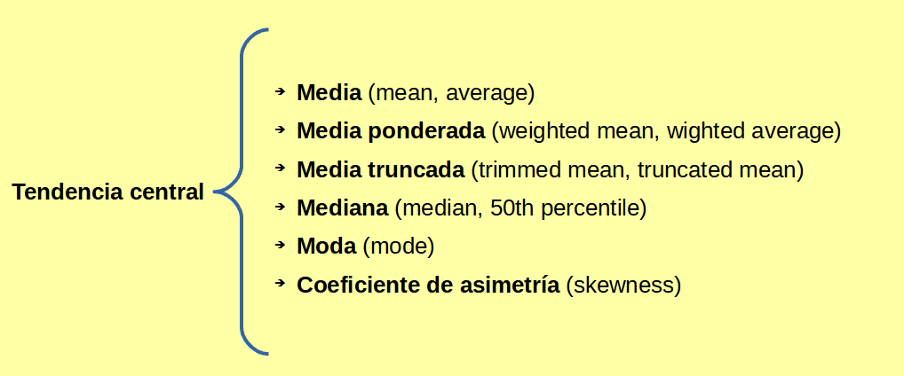 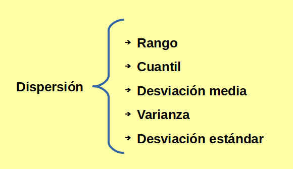
2. VISUALIZACIÓN DE DATOS
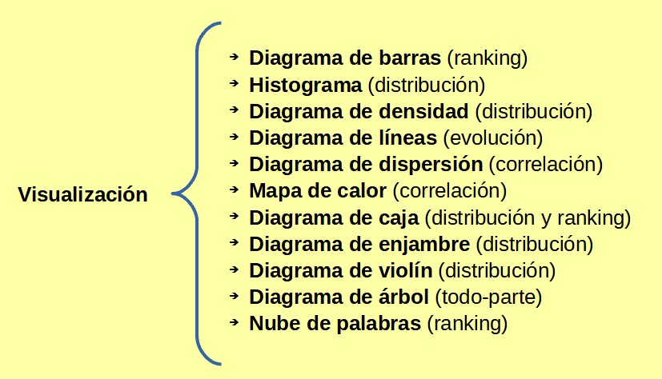
Tendencia central¶
- Las columnas pueden tener miles de valores distintos.
- Un paso básico al explorar los datos es obtener un valor típico para cada columna.
- Tendencia central es la estimación de dónde está localizada la mayoría de los datos.
* Media (mean, average) Medida más común, aunque sensible a valores extremos.
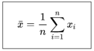
* Media ponderada (weighted mean, weighted average) Útil cuando queremos dar menos peso a alguna de las observaciones.
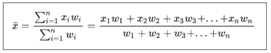
* Media truncada (trimmed mean, truncated mean) - Eliminamos valores extremos (outliers). - Es una medida más robusta (menos sensible a valores extremos)
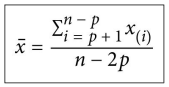
* Mediana (median, 50th percentile)
- Valor que ocupa la posición central en un conjunto de datos ordenados.
- Si el conjunto de datos es par, será la media de los dos que ocupan esa posición.
- Menos sensible a valores extremos.
* Moda (mode)
- El valor o categoría que más se repite en un conjunto de datos.
- Se usa principalmente para datos categoriales.
* Coeficiente de asimetría (skewness)
- Permite saber si el conjunto de datos sigue una distribución normal.
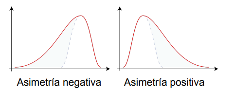
Dispersión¶
- La tendencia central es una forma de resumir una variable.
- Otra forma de hacerlo es mediante la dispersión (variabilidad, midiendo si los valores están agrupados o dispersos.
- Es útil para identificar valores extremos (outliers).
* Rango (range)
- Es la diferencia entre el valor más grande y el más pequeño.
- Es la medida más básica de dispersión.
- Es muy sensible a valores extremos.
* Cuantil (quantile)
- Puntos tomados a intervalos regulares de una distribución que la dividen en conjuntos de igual tamaño.
- Cuartiles: dividen la distribución en cuatro partes (0.25, 0.50, 0.75).
- Percentiles: divide la distribución en cien partes. - El percentil P es un valor de manera que al menos P por ciento de los valores tienen este valor o menos, y como máximo 100-P por ciento toman este valor o más. - La mediana es lo mismo que el percentil 50.
* Rango intercuartílico (interquartile range, IQR)
- Medida habitual de variabilidad.
- Diferencia entre el percentil 75 (Q3) y el percentil (Q1)
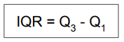
- Muestra el rango cubierto por la mitad central de los datos.
- Menos sensible a valores extremos que la varianza y la desviación estándar.
* Desviación media (mean absolute deviation)
- Distancia promedio entre cada punto y la media.
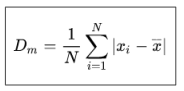
* Varianza (variance, mean-squared-error)
- Promedio de la desviación al cuadrado.
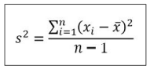
* Desviación estándar (standard deviation)
- Raíz cuadrada de la varianza.
- Más fácil de interpretar que la varianza al estar en la misma escala.
- Aunque menos intuitiva es más usada que la desviación media.
- Especialmente sensible a valores extremos (igual que la varianza).
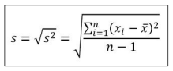